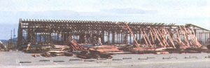
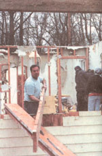
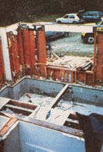
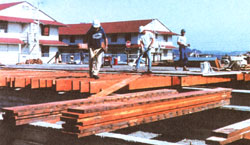

What do aluminum cans, newspapers, tires, books, warehouses, barns, and houses have in common? Believe it or not, they can all be recycled.
More and more commonly, used building materials are being sold in warehouses all across the country. They are being salvaged from old buildings that would have been demolished, but are instead being "deconstructed."
In deconstruction, the building has to be surveyed to determine what can be salvaged and what can't before any dismantling work can be done. Crew members look for visible defects and more subtle signs of wear and tear, as well as how difficult a certain material is to remove. The entire process is both labor intensive and time consuming and is something like building the structure in the first place, only backwards.
According to Leslie Kerkland, director of The Loading Dock, a clearinghouse for reusable building materials, "We go into building that would otherwise be bulldozed or burned down, and we salvage what we want to sell in our warehouse and what we know our customers want. It's mainly doors, sinks, toilets, lumber, flooring."
Deconstruction has been slow to catch on because contractors are doubtful of its time and cost effectiveness. It becomes more attractive when you take into account the savings in disposal costs and the resale value of the building materials. Even greater, though, are the environmental benefits of salvaging and deconstruction: improved air quality from not having to burn waste materials, less landfill use, and reduction of solid waste. Some of the lumber recovered from deconstructed buildings has even been classified as vintage or priceless. Old growth timbers, architectural trimmings, and antique doorknobs can all be found at used building materials yards.
In Santa Rosa, California, a company called Beyond Waste has deconstructed and salvaged materials from many buildings, including thousands of board feet of old growth lumber. "The lumber recovered from some of these buildings is lumber you can't find anymore. When we take down a building piece by piece, we're actually preserving old growth forests," says Pavitra Crimmel, one of Beyond Waste's partners.
"Some of our customers are homeowners looking for cheap lumber. Some are environmentalists who go out of their way to buy recycled materials. Then we get customers who find this old growth lumber beautiful, and really appreciate it for its sheen and value."
Materials that can be salvaged through deconstruction include: plywood, lumber, hardwood flooring, bricks, windows, concrete, plumbing fixtures, doors and knobs, hinges, paneling, insulation, stairs and railings, asphalt roof tiles, moldings and baseboards, countertops. The greatest benefit in recycling building materials comes to the consumer, who purchases the material at incredibly low prices.
Materials sold are in good, if not excellent, condition. Even if they do show signs of wear, contractors, architects, and buildings will still buy used materials for construction projects, they just don't use them for high visibility applications.
There are warehouses nationwide that sell used building materials. The following are just a few:
• The Loading Dock, Baltimore, MD: 410-792-DOCK
• Beyond Waste, Santa Rosa, CA: 707-792-2555
• The Reuse Center, Nashville, TN: 615-327-9009
• Habitat for Humanity, ReStores, San Antonio, TX: 210-223-3647; RaleighDurham, NC: 919-833-1999; Tulsa, OK 918-592-7904.
Don't Drink the Water might sound like an old movie title, but our clean water sources are threatened by development.
One million Americans get sick and 900 die each year from drinking contaminated water. The Environmental Protection Agency (EPA), however, may be more interested in building more expensive water purification plants than in protecting uncontaminated watersheds from development, according to Protecting the Source, a recent report put out by the Trust for Public Land.
A 1997 EPA study concluded the federal agency will need to spend $138.4 billion on infrastructure over the next 20 years to ensure adequate safe supplies of drinking water. The EPA arrived at this figure with out adequately considering the potential savings from protecting water at its source; a modest investment in watershed protection could significantly reduce expensive water purification processes down the road, the report charges.
Watershed land collects and directs rainwater, removing potentially deadly pathogens and pollutants. Development limits this function, causing a need for increased filtration and chlorinization, if the water can be purified at all. Despite this fact, Protecting the Source says critical recharge land is paved over at a rate equal to four-and-a-half square miles per day.
"Unmanaged development is the greatest threat to a watershed's health," says the report's author Richard M. Stapleton. "Watershed land is the funnel that collects rainwater and directs it, by stream or by recharge, to the pool from which we drink. The pool can be a reservoir above ground or an aquifer below. For either, both the quality and the quantity of water retained depend heavily upon the condition of the watershed:'
Boston and Atlanta, for example, have been forced to abandon reservoirs overrun by development, and water bills are increasing around the country in order to pay for filtration and treatment to remove pesticides and protect against cryptosporidium. Some state and local governments have begun warding off the destructiveness of unmanaged construction on water supplies by passing legislation mandating the acquisition and preservation of watershed land. The fastgrowing mountain town of Gunnison, Colorado has purchased ranch land on top of an aquifer to prevent its development and the subsequent pollution of the aquifer below it. New Jersey's Republican governor Christine Whitman says of her state policy: "Some watershed land must not be developed. Its natural value in buffering, storing, filtering, and recharging far exceed whatever commercial value it may hold:' In other words, some legislators are convinced it may be far less expensive to protect water at its source than to purify it later.
"We're looking again at the big picture now," Stapleton explains, "at a symbiotic relationship where we combine benefits. If you protect watershed land, you not only protect the quality of the water, you protect the quantity of the water; you also provide open space, you provide habitat, and you reduce the potential for flooding. There are many, many benefits."
-Cara Joy David
|
 By Marshall Clarke |
 By Beyond Waste |
 Workers for the loading Dock in Baltimore salvage reusable materials from a deconstrucion project for resale in their warehouse. |
|
 |
|
|